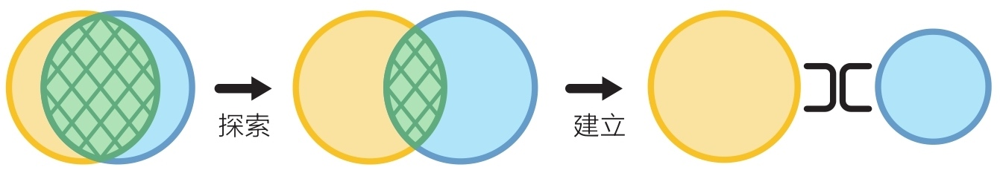

小时候看古代小说，总觉得他们打仗用的阵法特别炫酷，比如一字长蛇阵，攻击到蛇头、蛇身或蛇尾时，瞬间就能卷、绞、咬。这些情节总是让我觉得又威风又神秘，兴奋不已。长大后明白了作为个体的士兵在组成部队后，通过阵法的运用，能产生出远超个体之和的力量。
在现代商业社会，面对激烈的商业竞争，你的团队如何排兵布阵呢？本文尝试探讨一下团队拓扑在嵌入式领域的应用。
什么是团队拓扑
河南省新密市出土了一套4500年前我国最早的《风后八阵兵法图》，传说由黄帝与其大将风后研创。该图共九幅，一幅为八阵正图，其余八幅为阵势图，每幅图旁均有文字说明，介绍攻防要诀。黄帝靠着这个兵法图，“用经略，北清涿鹿，南平蚩尤，底定万国”，一统中原。
你看，4500年前古人就开始用阵法来打仗。他们是非常讲究布阵的。布阵得法就能充分发挥军队的战斗力，克敌制胜。
现代商业组织如何布阵呢？我们知道有金字塔型和扁平型的组织结构。这些都属于静态的结构。但在今天这样一个快速变化的商业环境中，我们需要更加强调动态变化。
《高效能团队模式》介绍了团队拓扑(Team Topologies)，它是一种全新的架构，一种动态的过程。书中提出了一种将团队结构和组织设计与软件系统的架构相结合的方法。它强调了在不同组织层次上创建适应性强、高效协作的团队结构的重要性。
团队拓扑定义了四种类型的团队，以及它们之间的三种交互模式。
这四种类型和三种模式表示什么意思呢？
我们以某个嵌入式领域的组织为例。它有多个产品中心，每个产品中心就是一个业务流团队，它最接近用户，负责一个产品、一项服务或者一组功能，能够独立交付用户价值。
作为业务流团队，产品中心持续面临交付压力。他们可能没有时间去研究和学习新技能，所以需要赋能团队的帮助。赋能团队由特定技术领域或产品领域的专家组成，他们在工具、实践、框架、技术栈等方面给出高质量的建议。这使得业务流团队不必付出太多努力就能获得能力提升。
这个产品中心的产品还涉及到一些复杂的预测算法，由一个专家小组负责，这个小组就是复杂子系统团队。复杂子系统团队负责构建和维护系统中严重依赖专业领域知识的子系统。这类业务非常复杂，需要具备特定能力的专家。
产品中心基于公司的产品平台，根据特定行业的客户需求做二次开发。这套产品平台由一个平台团队负责。平台团队的目标是使业务流团队能够以高度自治的方式交付工作。平台团队提供的内部服务使得业务流团队无须开发底层服务，降低了认知负荷。
熟悉完这四类团队，我们再看看三种交互方式。
产品中心刚成立时，对产品平台不熟悉，需要平台小组手把手教，一起工作。这时候他们的交互方式是协作（一起紧密地工作）。
产品中心将以敏捷的方式交付产品，因此聘请了外部顾问团队做敏捷赋能工作，以优化研发管理并提升技术实践能力。顾问团队提供的是指导和赋能，而不是直接参与具体交付工作，因此他们之间的交互方式就是促进。
产品中心还需要其它部门的协助，例如需要物资部提供元器件的采购服务。这时候物资部以服务的方式提供能力给产品中心。服务有清晰的边界，不需要了解太多上下文，可以尽量减少协作。
团队拓扑在嵌入式领域的应用
团队拓扑的价值在于，它能帮助我们以动态的视角来排兵布阵。我们在嵌入式系统的团队设计——团队优先 中提到，要采用“团队优先”的原则，降低团队认知负荷。我们来看看如何利用团队拓扑进行排兵布阵。
从价值流发掘业务能力
价值流是指在整个产品开发过程中，从需求到最终用户获得价值的全部过程。通过价值流分析，可以深入了解整个业务流程，识别潜在的业务能力需求。
可以通过生产路径图（Path to Product）可视化从需求到最终交付的整个价值流。在生产路径图中，每个阶段都有其特定的目标、活动以及所需的业务能力。业务能力是组织实现其目标所需的技术和业务的组合，不同的业务能力在不同的阶段发挥着关键作用。例如，需求分析阶段需要强大的业务分析和知识转化能力。在设计阶段，需要在硬件、电气、结构和软件等领域的专业能力。
从业务能力识别业务流团队
从业务能力中找到核心能力，核心能力离客户最近，要能够独立贡献客户价值。这些是业务流团队需要具备的能力，通过核心能力识别找到业务流团队。
以一家嵌入式领域的公司业务举例来说，其价值流是以行业标准为基础，满足各地区的差异化需求，完成产品供货是其价值流。其中产品的设计、软件研发是其核心能力。而标准制定、批量生产不是其核心能力。这家公司将产品中心作为业务流团队，产品中心需要拥有这些核心能力。
逆康威定律设计业务流团队
产品中心作为业务流团队，可能仍然规模太大，需要进行拆分。康威定律揭示了组织结构对产品结构的深远影响，拆分团队需要考虑康威定律。
康威定律（Conway's Law）是由计算机科学家梅尔·康威（Melvin Conway）提出的原则，它表明组织结构的设计会影响到所生产的系统的设计：
设计系统的组织由于受到约束，这些设计往往是组织内部沟通结构的副本。
也就是说，如果组织结构与系统架构不一致，最终组织结构会胜出，系统架构将会与组织结构匹配。例如有四个小组合作开发一个编译器，那么你将得到一款具有四个步骤的编译器。
逆康威定律是对康威定律的一种反思，由Thoughtworks的技术总监James Lewis提出：团队结构必须与所需的软件架构或者产生非预期设计的风险相匹配。
逆康威定律的目标是使组织更适应系统的需求。例如编译器架构设计了4个模块，我们可以考虑由4个团队开发这个编译器。这有助于促进系统的灵活性和创新，以适应不断变化的业务和技术环境。
设计业务流团队时，除了逆康威定律的指导，还要考虑团队规模。参考嵌入式系统的团队设计——团队优先 中提到的5-9人团队规模，以及设计系统边界，以降低团队认知负荷。
增强业务流团队的能力，消除短板
根据价值流各阶段的目标和能力要求，识别出业务流团队的能力短板和瓶颈，通过各种手段为业务流团队高效、高质量地交付产品提供系统性支撑。
如果是技术过于复杂，可以建立复杂子系统团队，封装技术复杂性。例如某个预测算法，可以由内部资深专家，或者与大学等研究机构合作，形成专家团队。
如果是某些能力不足，可以在公司内部或者寻找外部资源，组成赋能团队，引入新的方法、实践和工具，提升团队的认知能力和工具升级。例如在质量内建、持续交付、项目管理等方面引入外部顾问团队。
如果发现产品已经逐渐成熟，可以平台化，可以建立平台团队，打造产品平台，以提升团队的响应力。这一点很多企业都在做，需要注意的是，平台应该与产品紧密结合。例如平台来源于产品，并反过来成就产品。
持续进化团队拓扑
团队拓扑需要与时俱进，这不仅体现在结构上，也体现在交互方式上。
例如在产品探索阶段，业务专家、硬件、软件和结构团队需要高度协作，它们的边界是重叠的，甚至可能成立多功能团队，由不同角色人员组成一个创新小团队。这时候团队间的交互模式是协作。当产品成型后，团队间交互可能由协作变为服务。例如结构团队只根据产品中心的需求做结构修改服务。

产品平台也存在类似的情况。当一个业务流团队想基于产品平台快速定制出一个新产品时，由于这个业务流团队是第一次使用产品平台，需要手把手教。这时候可以采用协作方式，由产品平台团队派人与业务流团队一起密切工作。当业务流团队基本熟悉了产品平台后，可以采用赋能的方式，按需指导，但不参与业务开发。当业务流团队足够成熟后，可以采用服务方式，通过团队API提供支持，例如完整的官方平台文档。
总结
团队拓扑不仅是一种组织设计方法，更是一种思考动态变化的商业环境下如何最优化团队结构的理念。以业务流团队为中心，以团队优先为原则，通过赋能团队、复杂子系统团队和平台团队，降低团队认知负荷，并灵活运用三种交互模式，组织能够更好地应对未知挑战，提高整体效能。